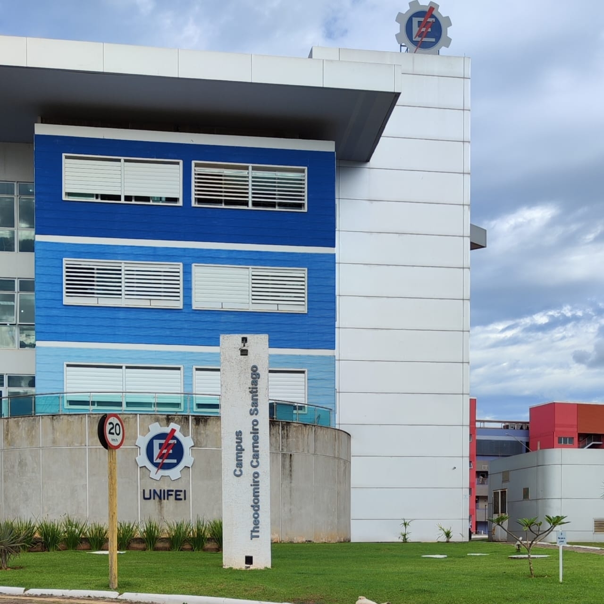

Inicialmente esse projeto foi criado vizando diminuir os problemas enfrentados pelos dicentes e docentes da UNIFEI - Itabira na busca de moradia.
O intuito principal do mesmo é possibilitar que as pessoas que buscam uma móradia para residir no período universitário tenham uma plataforma expondo as opções de residencia e características destas, para que este indivíduo tenha um melhor conforto e experiência.
Link para o figma